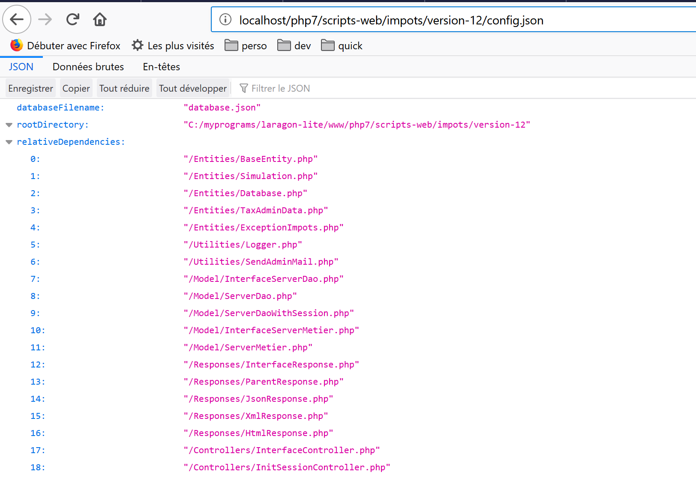
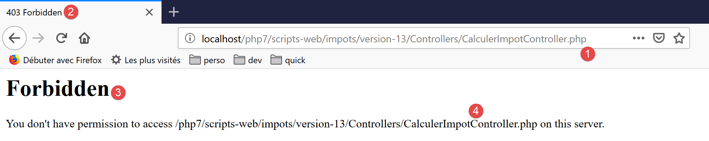
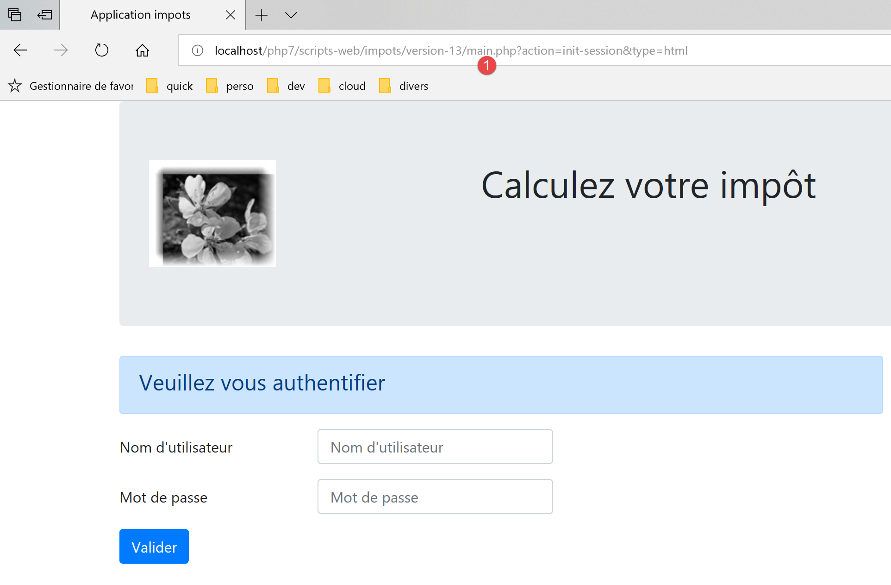

24. Exercício prático – versão 13
A versão 13 traz poucas alterações: reforça a segurança do acesso aos ficheiros da aplicação.
Com a versão 12, é possível solicitar a página URL a seguir à [http://localhost/php7/scripts-web/impots/version-12/config.json]. Obtém-se então a seguinte página (Firefox):

No entanto, este ficheiro [config.json] contém informações sensíveis, tais como os identificadores dos utilizadores autorizados a utilizar a aplicação. Não deve estar acessível aos utilizadores. O mesmo se aplica a todos os ficheiros da aplicação, com exceção dos ficheiros [main.php, index.php, Views/logo.jpg], que, por sua vez, devem estar acessíveis a partir do exterior. Com efeito, as vistas precisam de ter acesso ao logótipo da aplicação através do ficheiro HTTP. A versão 13 oferece uma solução simples para este problema.
No NetBeans, copiamos e colamos a pasta [version-12] na pasta [version-13]:

- na pasta [1], na pasta raiz da aplicação, deixamos apenas os scripts [index.php, main.php];
- em [2], os ficheiros de configuração são colocados numa pasta [Config];
- em [3], a imagem [logo.jpg] é colocada numa pasta [Resources];
O servidor HTTP utilizado aqui é um servidor Apache. Este permite controlar o acesso a uma pasta através de um ficheiro [.htaccess]. Em todas as pastas às quais pretendemos impedir o acesso direto através do ficheiro URL, criamos o seguinte ficheiro [.htaccess]:

Estas duas linhas fazem com que o acesso à pasta seja proibido a todos.
Colocamos este ficheiro em todas as pastas da aplicação, exceto na pasta raiz e na pasta [Resources]. Por fim, apenas três ficheiros ficam acessíveis a partir do exterior: [index.php, main.php, Resources/logo.jpg].
Vamos fazer alguns testes:




É necessário efetuar algumas alterações no código:
No ficheiro [Config/config.json]:

No ficheiro [main.php]:

No ficheiro [Views/v-bandeau.php]: